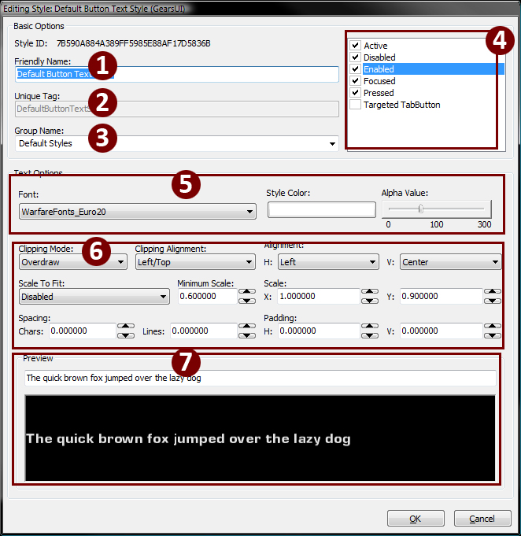
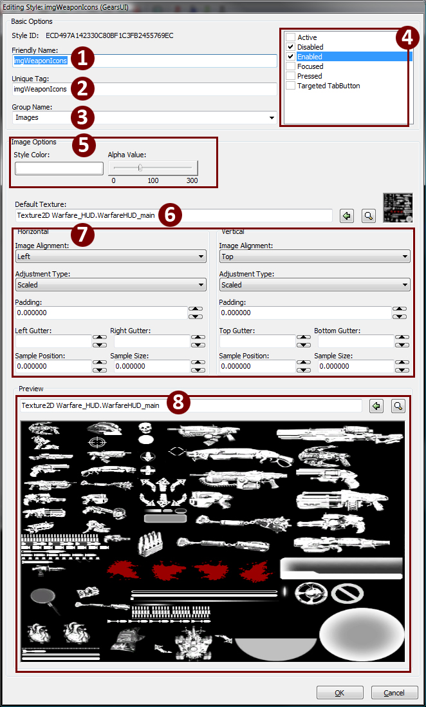

UDN
Search public documentation:
StyleEditorUserGuideCH
日本語訳
한국어
Interested in the Unreal Engine?
Visit the Unreal Technology site.
Looking for jobs and company info?
Check out the Epic games site.
Questions about support via UDN?
Contact the UDN Staff
한국어
Interested in the Unreal Engine?
Visit the Unreal Technology site.
Looking for jobs and company info?
Check out the Epic games site.
Questions about support via UDN?
Contact the UDN Staff
UI风格编辑器用户指南
文档概要：使用UnrealUI风格编辑器套件控制UI风格的指南。 由Maury Mountain创建。由Richard Nalezynski? 进行维护。简介
本文档描述了如何使用虚幻UI风格编辑器的主要功能。 当您在自定义您的用户界面时，使用您UI页面中的风格可以为您节省很多时间和精力，它为您提供了一个查看您UI视觉外观的集中区域。风格的作用和网页开发中的Cascading Style Sheets (CSS)类似，允许您设置文字及图片的预定义外观和属性，并把它们应用到整个UI中。和CSS类似，如果您更改了特定风格的属性，将会在它当前分配了该风格的所有控件上进行更新。使用风格编辑器
创建风格
当您创建风格时，可以创建者三种类型中的一种，为它们设置Friendly Names(友好的名称)、Unique Tag (唯一的标签)和组，以便可以在UI编辑器中进行更好地组织和管理，设置这个风格将要使用的UI状态，配置它的属性，然后您可以在风格编辑器中预览风格的最终效果。风格编辑器概述
编辑器布局
在风格编辑器中有三个不同的部分： 您可以根据您正在使用的风格的类型来查看这些部分的作用。使用风格
风格类型
Text Style(文本类型) 风格类型仅接受一种字体类型。风格将会找到当前包中存在的所有字体类型，并允许您把它们非配给风格。
| 1-3 | Naming section(命名区域) | 1&2应该是一样的，用于保持事物的一致性(一个在代码中进行引用、一个在UI编辑器中引用)。3是组名称，它也将出现在UI编辑器中的右击弹出的分配风格菜单中。 |
| 4 | Widget state boxes (控件状态框) | 选中那个复选框来把那个风格的那个状态设置为“打开”状态。如果没有选中复选框，控件将不会改变，或者它将默认地使用它父项的风格。每种状态可以分别地进行编辑，或者通过按下SHIFT键并选择它们来同时选中多个状态，然后编辑风格中的值。 |
| 5 | Text Styles(文本风格) | 您可以选择Existing (现有的)或者Custom(自定义)风格，Existing (现有风格)意味着combo style(组合风格)根据之前创建的文本风格进行设置，Custom(自定义)意味着您正在为这种风格特地设置文本。 |
| 6 | Text Options(文本选项) | 仅当选择“Custom(自定义)”时才会出现这个选项。设置字体、字体颜色、alpha 、剪辑模式、剪辑对齐、总体对齐(水平及垂直)、它的缩放设置、总体的X/Y缩放比例、字符间距、行间距以及空间左侧和顶部的留白。 |
| 7 | Preview (预览) | 基于文本选项的文本预览框。基于文本输入进行改变。 |

| 1-3 | Naming section (命名部分) | 1&2应该是一样的，来保持食物的一致性(UniqueTag用于在代码中引用、FriendlyName用于在UI编辑器中引用)。注意"FriendlyName"名称可以包含空格，但是UniqueTag不能包含空格。3是组名称，它也将出现在UI编辑器中的右击弹出的分配风格菜单中。 |
| 4 | Widget state boxes (控件状态框) | 选中那个复选框来把那个风格的那个状态设置为“打开”状态。如果没有选中复选框，控件将不会改变，或者它将默认地使用它父项的风格。每种状态可以分别地进行编辑，或者通过按下SHIFT键并选择它们来同时选中多个状态，然后编辑风格中的值。 |
| 5 | Image Color settings(图片颜色设置) | 用于定义和图片相乘的颜色，或者调整它的总体透明度(不需要DXT5贴图)。黑色的贴图将不会接受颜色改变。 |
| 6 | Texture definition (贴图定义) | |
| 7 | Texture Settings(贴图设置) | 细分为Horizontal(水平方向) and Vertical(垂直方向)，您可以设置贴图如何进行缩放、如何分配贴图(???从来不使用这种方式，也许仅对Clipped(剪辑)或Clamped(区间限定)描画模式有用)、控件的边之间的留白或者通过在Sample Position和Sample Size (U, UL, V, VL)中输入值来使用自定义UVs创建风格。 |
| 8 | Preview(预览) | 您的图片的预览，显示了前面部分设置的值。注意，这不是贴图定义，将不会把贴图分配给风格。 |

| 1-3 | Naming section(命名区域) | 1&2应该是一样的，用于保持事物的一致性(一个在代码中进行引用、一个在UI编辑器中引用)。3是组名称，它也将出现在UI编辑器中的右击弹出的分配风格菜单中。 |
| 4 | Widget state boxes (控件状态框) | 选中那个复选框来把那个风格的那个状态设置为“打开”状态。如果没有选中复选框，控件将不会改变，或者它将默认地使用它父项的风格。每种状态可以分别地进行编辑，或者通过按下SHIFT键并选择它们来同时选中多个状态，然后编辑风格中的值。 |
| 5 | Text Styles(文本风格) | 您可以选择Existing (现有的)或者Custom(自定义)风格，Existing (现有风格)意味着combo style(组合风格)根据之前创建的文本风格进行设置，Custom(自定义)意味着您正在为这种风格特地设置文本。 |
| 6 | Text Options(文本选项) | 仅当选择“Custom(自定义)”时才会出现这个选项。设置字体、字体颜色、alpha 、剪辑模式、剪辑对齐、总体对齐(水平及垂直)、它的缩放设置、总体的X/Y缩放比例、字符间距、行间距以及空间左侧和顶部的留白。 |
| 7 | Image Styles(图片风格) | 使combo style (组合风格)基于先前制作的图片风格进行设置，或者创建针对Combo Style(组合风格)的自定义设置。 |
| 8 | Texture Settings(贴图设置) | 细分为Horizontal(水平方向) and Vertical(垂直方向)，您可以设置贴图如何进行缩放、如何分配贴图(???从来不使用这种方式，也许仅对Clipped或Clamped描画模式有用)、控件的边之间的留白或者通过在Sample Position和Sample Size (U, UL, V, VL)中输入值来使用自定义UVs创建风格 |